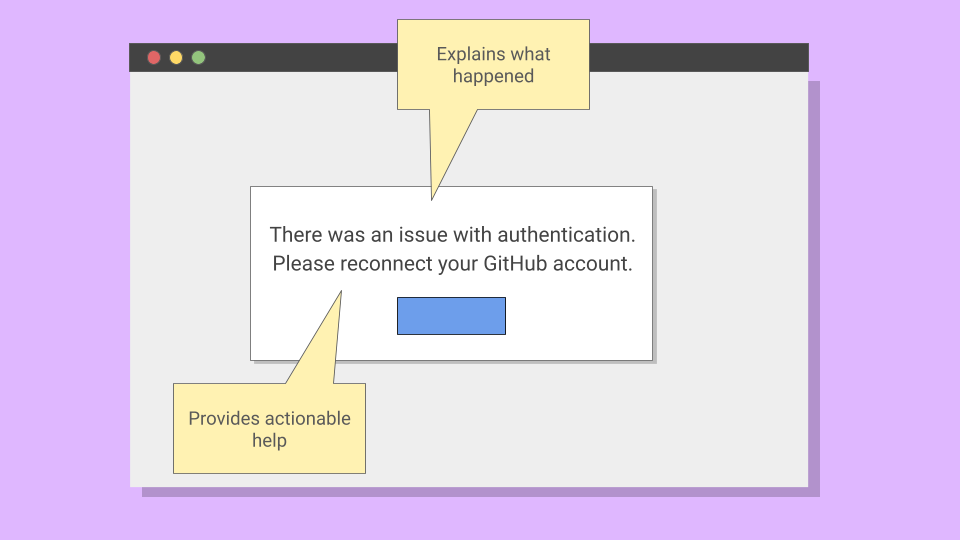

A/B Test Case Study: From Error to Recovery

The ultimate value found in UX writing lies in how we help shape business outcomes. It's up to UX writers to choose words that best describe what's happening and guide users on what to do next. Sometimes that influence shows up in obvious places like sign up buttons, other times it hides in small, overlooked corners of a digital product.
This speculative case study is about one of those corners: a single error message that was quietly driving frustration and support tickets until we turned it into a recovery path.
Methodology Note
- Based on: Error recovery patterns in SaaS environments
- Data: Based on typical conversion rates and sample sizes
- Purpose: Demonstrate statistical A/B testing methodology
The Challenge
This SaaS platform helped product teams manage release notes, track documentation updates, and sync content across tools like GitHub, JIRA, and Zendesk. Most of the time, the GitHub integration worked just fine. But every so often, the connection would timeout.
Every time it happened, users hit a wall. The system showed them: "401 Unauthorized"

Accurate, yes. But for most users? A dead end. Instead of fixing the problem themselves, they would abandon the workflow or open a support ticket.
I needed to find out if better copy could reduce frustration and help more users get back on track without support.
Forming the Hypothesis
To A/B test this, I started with an assumption about user behavior. I contacted the support team and requested access to call recordings and transcripts. It seemed that users weren't exactly confused about what went wrong, they understood there was an authentication issue. The biggest frustration was not knowing what to do next.
So I shaped the hypothesis: if the error message explained the issue and gave a clear next step, more users would reconnect GitHub on their own.
This seemed like a reasonable assumption. However, in A/B testing, we start with a null hypothesis.
In layman's terms, the null hypothesis (H₀) was that there would be no difference between the two error messages. If there was, I could reject the null hypothesis.
This distinction isn't pedantic. We test the null hypothesis rather than the alternative (H₁) because H₀ is simple, precise, and easy to calculate. Testing H₁ directly would require heavier assumptions and a different statistical framework, which is less practical in most applied settings.
In essence, my job was to see whether the new copy produced results that were unlikely to happen if that null hypothesis were true.
Designing the Test
The proposed message was: "There was an issue with authentication. Please reconnect your GitHub account."
With the new copy ready, I then partnered with a data scientist and an engineer to get the test set up. We split traffic so that half of users encountering the error saw the old message, and half saw the new one.
In A/B testing, the p-value tells us the probability of seeing results this extreme if there were actually no difference (the null hypothesis). A smaller p-value means the result is less likely due to chance.
The usual threshold for significance is 0.05, meaning there's a 5% chance of seeing results this extreme if the null hypothesis were true. To avoid stopping the test early, we planned sample size and duration up front.
Using Evan Miller's calculator, I set the minimum detectable effect at about +7 to 10 percentage points, power at 80%, and significance at 0.05 (5%). That told us how many users we needed to hit per group before making a call.
Given the rate of GitHub errors, that meant about two weeks of live traffic.
Findings
872 users saw the old message with 480 successfully recovering, meaning a 55% recovery rate. In comparison, 879 users encountered the new message and 572 recovered, resulting in a 65.1% recovery rate.

That's a +10.1 percentage point lift. But raw percentages don't tell the whole story, they need statistical backup.
When we ran the analysis, the p-value came in under 0.05.
In statistical terms, this means that if there were truly no difference between the two messages, the probability of observing results at least this extreme would be less than 5 percent. In other words, the difference was unlikely to be explained by random variation alone.
We also looked at the confidence interval (CI). For the +10.1 point lift, the 95% CI stretched from about +3.5 to +16.7, which told us two things:
At the low end (+3.5), the effect was still real and positive. At the high end, the impact could be way stronger than the average.
Because we had planned for 80% power, we knew the test wasn't under-sampled. The results were both reliable and meaningful.
Midway through the test, our support team pinged engineering, asking if they had fixed the bug. Ticket volume for GitHub errors had dropped and they assumed a patch had gone out. In reality, nothing about the integration had changed. The only change was the copy.
That reaction was evidence enough that words alone had shifted outcomes.
Outcome
After rolling out the friendlier copy to all GitHub users, we applied the same approach to other integrations like Bitbucket and GitLab. Each time, the principle held: clear, actionable copy helped more users solve problems without help.
This wasn't a flashy homepage copy or a major design overhaul. It was a single string buried in an error state.
Across two weeks of live traffic, more than 1,700 people hit this error. With the old message, almost half gave up or filed a support ticket. With the new message, 92 more users were able to resolve the issue on their own, translating to about 184 additional recoveries each month.
The statistics backed it up: a +10.1 point lift in recovery, a p-value under 0.05, and a confidence interval that stayed positive. More importantly, the story behind the numbers showed how UX writing directly reduced support load and improved user experience.
This goes to show that the smallest words can have measurable business impact.